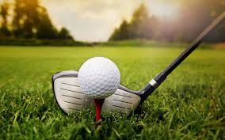

Regresar
Golf
El golf es un deporte cuyo objetivo es introducir una bola en los hoyos que están distribuidos en el campo con el menor número de golpes, utilizando para cada tipo de golpe uno de entre un conjunto de palos ligeramente diferentes entre sí, ya que la cabeza del palo tiene ángulos distintos, al igual que las varillas tienen longitudes diferentes. A menor número de grados de inclinación, mayor longitud de la varilla, por lo tanto, más distancia. Como máximo se pueden llevar catorce palos y como mínimo cinco palos. Al que practica el golf se le denomina golfista.1
En 1744, se fundó la primera asociación de jugadores en Escocia, y en 1745, también en Gran Bretaña, se creó la primera reglamentación del golf. Las primeras asociaciones de golf fueron la Honourable Company of Edinburgh Golfers (1744) y The Royal and Ancient Golf Club of St Andrews (1754).
El golf es un deporte cuyo objetivo es introducir una bola en los hoyos que están distribuidos en el campo con el menor número de golpes, utilizando para cada tipo de golpe uno de entre un conjunto de palos ligeramente diferentes entre sí, ya que la cabeza del palo tiene ángulos distintos, al igual que las varillas tienen longitudes diferentes. A menor número de grados de inclinación, mayor longitud de la varilla, por lo tanto, más distancia. Como máximo se pueden llevar catorce palos y como mínimo cinco palos. Al que practica el golf se le denomina golfista.1
En 1744, se fundó la primera asociación de jugadores en Escocia, y en 1745, también en Gran Bretaña, se creó la primera reglamentación del golf. Las primeras asociaciones de golf fueron la Honourable Company of Edinburgh Golfers (1744) y The Royal and Ancient Golf Club of St Andrews (1754).
